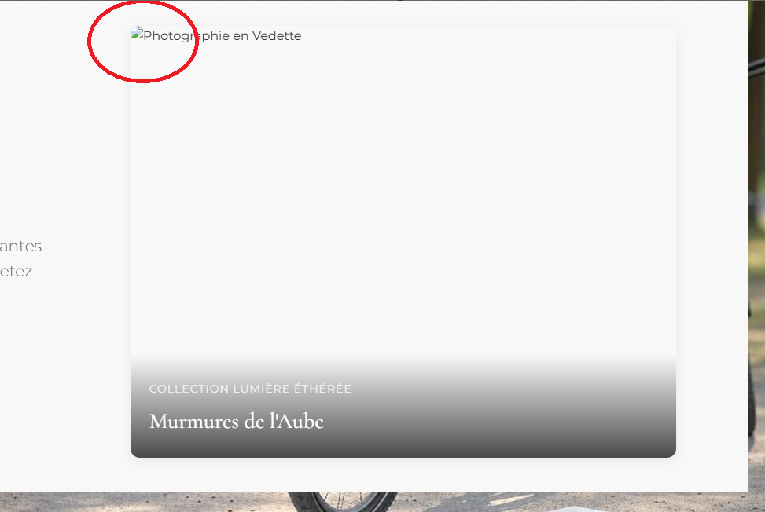

Prix et Reconnaissances
Les distinctions et reconnaissances reçues pour mon travail photographique
2024
Prix d'Excellence - Festival International de la Photographie
Catégorie Art Conceptuel
Décerné pour la série "ESPRITS DE NOTRE ESPRIT" qui explore la connexion entre l'eau et la conscience humaine.
Finaliste - Prix de la Photographie Contemportaine
Catégorie Nature Abstraite
Nomination pour la série "LE GRAND BLEU" qui capture les nuances subtiles des profondeurs marines réfléchies à la surface.
2023
Grand Prix - Biennale des Arts Visuels
Prix Special du Jury
Reconnaissance pour l'ensemble de l'œuvre et la contribution exceptionnelle à la photographie d'art contemporaine. Le jury a particulièrement souligné l'approche innovante et poétique de la capture des reflets d'eau.

Mention d'Excellence - Salon d'Automne
Section Photographie
Mention pour la série "RENVERSER LES MONTAGNES" qui joue avec les perceptions et les illusions créées par l'eau.
Sélection Officielle - Festival de la Photographie Environnementale
Catégorie Water Art
Sélection pour le projet "TISSER LA MATIERE" qui met en lumière la texture et la matérialité de l'eau.
2022
Prix Découverte - Festival PhotoNature
Catégorie Eau & Lumière
Premier prix pour la série "COMME A GIVERNY" qui rend hommage à l'œuvre de Claude Monet à travers des photographies de surfaces d'eau.
Sélection - Prix International de la Photographie Fine Art
Top 50 International
Sélectionnée parmi plus de 3000 artistes pour la délicatesse et l'originalité du travail photographique sans retouche.
2021
Finaliste - Prix de la Photographie Française
Catégorie Photographie Abstraite
Nomination pour la série "COSMOGONIE" explorant les thèmes de la création et du chaos à travers les mouvements de l'eau.
Prix du Public - Exposition Collective "Éléments"
Galerie Nationale
Reconnaissance par le vote du public pour l'œuvre "Reflet des Origines" dans le cadre de l'exposition sur les éléments naturels.
Catalogues et Publications
Sélection d'œuvres publiées dans des livres et catalogues d'exposition
L'Art de l'Eau: Photographes Contemporains
Éditions Lumière, 2023
Ouvrage collectif présentant les travaux de 12 photographes internationaux spécialisés dans la capture de l'élément eau. Inclut un chapitre dédié à mon approche artistique.
Catalogue: Biennale des Arts Visuels 2023
Musée d'Art Contemporain, Marseille
Catalogue officiel de l'exposition présentant les œuvres primées et la démarche des artistes sélectionnés.
Art Contemporain Magazine
Numéro Spécial "Eau & Art", Mai 2022
Article de fond sur ma démarche artistique et entretien détaillé sur le processus créatif.
Presse & Médias
Interviews et apparitions dans les médias
Le Monde des Arts
Juin 2023
"La photographe qui capture la poésie de l'eau" - Article complet sur mon travail et mon approche artistique unique.
Voir l'articleArts & Culture - France 5
Novembre 2022
Interview dans l'émission "Regards d'Artistes" avec présentation de mon processus créatif et visite de studio.
Voir l'extraitPodcast "L'Art en Question"
Mars 2022
Épisode dédié à mon parcours artistique et ma philosophie de la photographie contemplative.
Écouter le podcastArtNet International
Septembre 2021
"Water as Canvas: The Mesmerizing Photography of Giandra" - Feature article on the international art platform.
Read the article